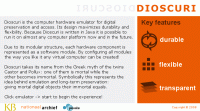
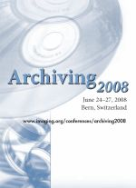
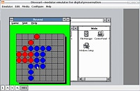

Latest news
19 January 2011
 A new release of Dioscuri has been made available by the Dioscuri project team. The new version (0.7.0)
offers the following fixes/enhancements:
A new release of Dioscuri has been made available by the Dioscuri project team. The new version (0.7.0)
offers the following fixes/enhancements:- implemented VNC support. Dioscuri can now act as a VNC server so that it can be
operated from other host(s) (credits: Evgeni Genev). Tested with the VNC client
from TightVNC which has native Windows
and Linux support and also a Java based client that could be used on a Mac with
a JRE.
- Fixed some small hot-spots that showed up after profiling version 0.6.0
- changed some of the logging settings that were popping up too many warnings after the redesign from 0.6.0
23 September 2010
A new release of Dioscuri has been made available by the Dioscuri project team. The new version (0.6.0)
offers the following fixes:- complete redesign of the hardware module structure
- there can now be 2 hard disks connected at once
- the mouse works under 16 bit, be it with quite a bit of lag: so there's still work to be done on that front
- fixed the fact that file paths were not entirely visible in the GUI config menus
- added a command line parameter option to enable, or disable the mouse and to use one or two hard disks
- Windows 3.0 runs smoothly under 32 bit
- improved the configuration menu
- possible to create screen shots during emulation
Checkout the table of supported hard- and software on the features page.
21 April 2010
A new release of Dioscuri has been made available by the Dioscuri project team. The new version (0.5.2)
offers the following fixes:- can now write to HD in 32 bit mode
- Windows XP look and feel no longer looses a part of the characters at the bottom of the screen
- white spaces in paths to disc images (files) no longer cause trouble
18 March 2010
A new release of Dioscuri has been made available by the Dioscuri project team. The new version (0.5.0)
offers the following improvements:- improved command-line interface
- updated GUI
- improved command line interface options
- added a label on the GUI that shows in which mode the emulator is running: 16- or 32 bit
- Dioscuri can now be executed from any location on the host system and still finds it's configuration- and image files stored in the application folder
- separated some logic from the GUI class and moved it to the util.dioscuri.Utilities class
- extracted an interface from the main JFrame so that it will be easier to create an applet of Dioscuri
- started working on unit tests for CPU instructions
- improved Javadoc API
- various bugs fixes
This is the first release of Dioscuri in cooperation with the KEEP project.
11 December 2008
 A new release of Dioscuri has been made available by the Dioscuri project team. The new version (0.4.0) offers the following improvements:
- Added backwards compatibility with JRE 1.5
- Added command-line interface
- Improved 32-bit CPU
- Fixed minor bugs in modules CPU
- Updated GUI
20 June 2008
 The Imaging Science & Technology (IS&T) conference about digital archiving takes place every year and is the largest conference about new techniques in rendering digital material. In 2006, the emulation project team attended this conference and first presented their ideas about how emulation could be applied to authentically render old and forgotten computer applications. This time, the Dioscuri team is present again to demonstrate the Dioscuri emulator to the public and present a paper about requirements for successfully applying emulation as a rendering extension to accessing digital archives. The IS&T conference takes place in Bern, Switzerland from June 25 until June 27 2008.
5 March 2008
 Dioscuri will be present at the biggest IT exhibition of Europe: CeBIT. As digital preservation is a matter of
the future, Dioscuri is situated in the future hall at the joint stand of Planets, Digital Preservation Europe
(DPE), NESTOR and CASPER. From 4 - 9 March several demos will be given of Dioscuri, including its recently
released 32-bit capabilities! Furthermore, two presentations on Friday, March 7th, will tell the story behind
Dioscuri and overall Planets-activities.
Dioscuri will be present at the biggest IT exhibition of Europe: CeBIT. As digital preservation is a matter of
the future, Dioscuri is situated in the future hall at the joint stand of Planets, Digital Preservation Europe
(DPE), NESTOR and CASPER. From 4 - 9 March several demos will be given of Dioscuri, including its recently
released 32-bit capabilities! Furthermore, two presentations on Friday, March 7th, will tell the story behind
Dioscuri and overall Planets-activities.You can find us at stand B14, Hall 9. See you at CeBIT!
14 February 2008
 Dioscuri version 0.3.0 has been released! This version supports 16-bit and 32-bit processing and is capable of running MS Windows 3.0 and other 32-bit applications. The emulated 32-bit CPU is taken from the JPC project with whom the Dioscuri project team has been cooperating. The new features of this release are:
- 16-bit and 32-bit X86-based CPU (real-address and protected mode)
- Added serial mouse support (experimental)
- Added serial port (UART 16550A with COM-ports 1 to 4)
- Fixed minor bugs in modules CPU, DMA, PIC
- Updated GUI
6 November 2007
During the Conference Tools and Trends on digital preservation, organised on 1 and 2 November 2007 by the National Library of the Netherlands, Dioscuri has been successfully demonstrated. The Dioscuri project team was present with a special demostand. Attendees of the conference could experience the old DOS-era offered by three computers running Dioscuri and MS-DOS. It was possible to open and edit WP5.1 documents, browse webpages with DOS-browser Arachne and play multiple computer games which showed the versatility of Dioscuri.
Furthermore, Dioscuri was officially presented to the audience by a presentation of Remco Verdegem, project leader of Dioscuri. Remco described the development process and emphasised that emulation is a viable and feasible preservation strategy for digital preservation.
The highlight of the conference for Dioscuri was the speech of emulation guru Jeff Rothenberg who gave a live demonstration of Dioscuri. He convinced the audience that even homemade applications that were assumed to be lost can be retained with Dioscuri. As an example, Jeff used a self-created digital agenda from 1983, called Calendar/1. Attempts to run this application on current computers fails and the calendar program seemed doomed to never run again. However, Dioscuri was able to run Calendar/1 again successfully.
3 September 2007
Dioscuri version 0.2.0 is out now! This release is capable of running various versions of MS-DOS, FreeDOS 0.9 Beta (included in package) and ELKS (Embeddable Linux Kernel Subset). The following improvements have been made:
- Fixed minor bugs in CPU instructions and added some new instructions
- Fixed keyboard status LEDs on GUI
- Improved system timer and PIT
- Improved GUI for image file selection
- Improved keyboard controller for mouse/keyboard control
- Added functionality to copy text to clipboard (text mode only)
See the disk images download section for various new disk image downloads.
13 August 2007
Dioscuri version 0.1.0 is out for download. Last month many improvements have been made:
- Fixed CPU/PIC problem (context switch interrupting repeat prefix handling)
- Fixed cursor problem
- Fixed minor bugs in CPU instructions
- Fixed VGA screen update (sometimes buffer got scrambled)
- Improved PIT timer functionality
- Improved keyboard support for extra characters
- Improved GUI with crossplatform Java Swing interface
- Added support for system clock based on PIT interrupts
2 July 2007
Dioscuri version 0.0.9 has been released! This is the first public release of Dioscuri and it has the following features:
- 16-bit Intel 8086-based CPU, DMA-support, IRQ-handling
- 1 MB RAM
- Storage devices: floppy, HDD
- Input devices: keyboard
- Output devices: VGA, screen
- System BIOS using Plex86/Bochs BIOS
- VGA BIOS using VGA LGPl’ed BIOS

{kind=link}